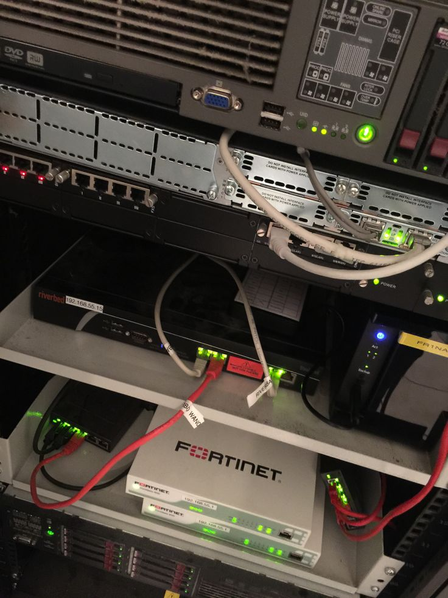

Appropriation de l'environnement de travail
Au cours de mon cursus en BUT Réseaux et Télécommunications, j'ai acquis une solide maîtrise des environnements informatiques. Cette compétence, pilier de notre métier, m'a permis de comprendre l'interaction entre le matériel (hardware) et le logiciel (software).
J’ai appris à évoluer avec agilité sur différents systèmes d’exploitation. Sous Windows, j'ai consolidé mes bases en gestion de fichiers et maintenance logicielle. Sous Linux (notamment Debian et Ubuntu), j'ai découvert la rigueur de l'arborescence système, la gestion fine des droits d'accès (chmod, chown) et l'administration des comptes utilisateurs. Cette double culture système est indispensable pour s'adapter à n'importe quel parc informatique professionnel.
.jpg)
Maîtrise de la CLI et de l'administration Linux
Une composante majeure de ma formation réside dans l'utilisation intensive de l'interface en ligne de commande (CLI). J'ai délaissé l'interface graphique pour apprendre à manipuler le système via le terminal, une compétence cruciale pour l'administration de serveurs distants.
Je suis aujourd'hui capable de naviguer avec fluidité dans les répertoires, d'automatiser des tâches simples et de configurer des services via des éditeurs de texte en console comme Nano ou Vim. Cette approche me permet d'intervenir sur des équipements réseaux ou des serveurs "headless" (sans écran) de manière efficace et sécurisée.
Virtualisation et outils techniques
Pour tester et déployer des architectures sans contraintes matérielles, j'ai appris à utiliser des solutions de virtualisation telles que Oracle VM VirtualBox. Je sais configurer des machines virtuelles, gérer les ponts réseaux (Bridge) et les réseaux internes pour simuler des maquettes d'infrastructures complètes.
Au-delà de la virtualisation, j'utilise quotidiennement des outils d'analyse et de diagnostic. Cela inclut la compréhension des flux de données et la vérification de la bonne connectivité entre les hôtes, me permettant ainsi de valider la configuration logicielle d'un poste de travail au sein d'un réseau local.

Perspectives et évolution
Mon apprentissage ne s'arrête pas aux bases académiques. Je souhaite désormais approfondir ma maîtrise de l'administration système en explorant le Scripting Bash pour automatiser des tâches complexes.
À court terme, mon objectif est de mettre en place un serveur domestique (Auto-hébergement) pour pratiquer l'installation de services (Web, DNS, Stockage) en autonomie. Je suis également très intéressé par les problématiques de durcissement système (Hardening) afin d'intégrer nativement la sécurité dans ma gestion des outils informatiques.